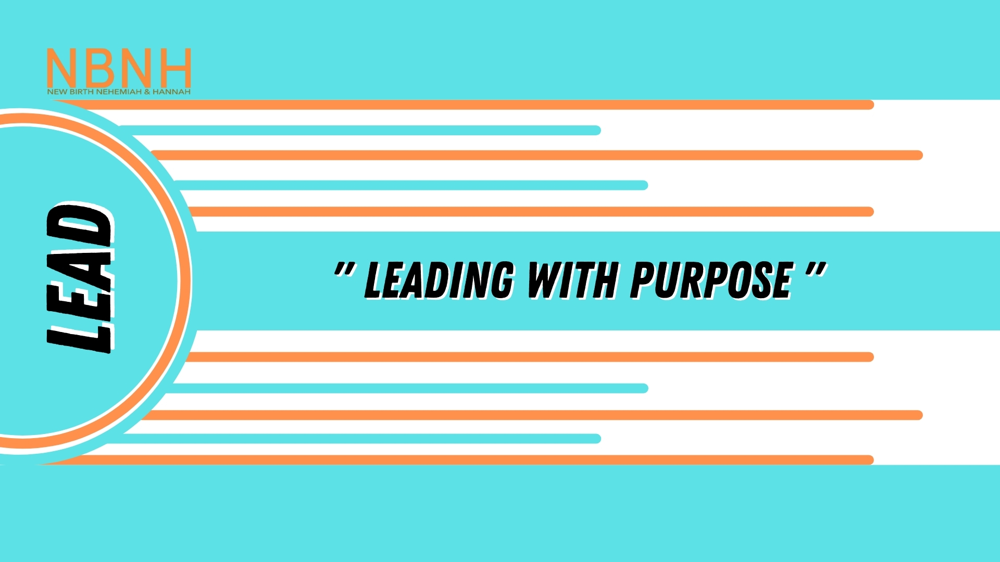

 Lead is a series that challenges every demographic that we think we identify with, for us to lead from there. This was a very spirited series and brought great insight into what the will of God is for us concerning leading from where we are. Empowered is one word that describes the outcome of experiencing every message from this series.
Genesis 41:37–44 NIV
The plan seemed good to Pharaoh and to all his officials.
So Pharaoh asked them, “Can we find anyone like this man, one in whom is the spirit of God?”
Then Pharaoh said to Joseph, “Since God has made all this known to you, there is no one so discerning and wise as you.
You shall be in charge of my palace, and all my people are to submit to your orders. Only with respect to the throne will I be greater than you.” Joseph in Charge of Egypt
So Pharaoh said to Joseph, “I hereby put you in charge of the whole land of Egypt.”
Then Pharaoh took his signet ring from his finger and put it on Joseph’s finger. He dressed him in robes of fine linen and put a gold chain around his neck.
He had him ride in a chariot as his second-in-command, and people shouted before him, “Make way!” Thus he put him in charge of the whole land of Egypt.
Then Pharaoh said to Joseph, “I am Pharaoh, but without your word no one will lift hand or foot in all Egypt.”
*Sometimes obedience brings smooth transitions from one phase to the next.
Don’t be stubborn to what God is calling us to be and do but be humble.
There is favor when we do it right, live right, and approach God’s calling right.
Some times what you are going through is the connection to your growth and blessing.
If you want to change you must be the connection.
Promotion comes from God, and if we want His connection, it must be with His time.
2 Corinthians 12:1–10 KJV
It is not expedient for me doubtless to glory. I will come to visions and revelations of the Lord.
I knew a man in Christ above fourteen years ago, (whether in the body, I cannot tell; or whether out of the body, I cannot tell: God knoweth;) such an one caught up to the third heaven.
And I knew such a man, (whether in the body, or out of the body, I cannot tell: God knoweth;)
How that he was caught up into paradise, and heard unspeakable words, which it is not lawful for a man to utter.
Of such an one will I glory: yet of myself I will not glory, but in mine infirmities.
For though I would desire to glory, I shall not be a fool; for I will say the truth: but now I forbear, lest any man should think of me above that which he seeth me to be, or that he heareth of me.
And lest I should be exalted above measure through the abundance of the revelations, there was given to me a thorn in the flesh, the messenger of Satan to buffet me, lest I should be exalted above measure.
For this thing I besought the Lord thrice, that it might depart from me.
And he said unto me, My grace is sufficient for thee: for my strength is made perfect in weakness. Most gladly therefore will I rather glory in my infirmities, that the power of Christ may rest upon me.
Therefore I take pleasure in infirmities, in reproaches, in necessities, in persecutions, in distresses for Christ’s sake: for when I am weak, then am I strong.
Individuals who break things (curses, cycles, confusion) are those who seek God.
Seeking God, through your sadness and frustration yields deep solutions.
Thorns can manifest in many ways; as darkness, cycles, uncomfortable situations, but God has given us the grace to still lead from where we are by arising and taking action. Your thorn is graced
Get a plan, strategize, and build momentum.
God is able to multiply what you have.
Let God transform you, so that you can lead.
Isaiah 55:7-13 NIV
Let the wicked forsake their ways and the unrighteous their thoughts. Let them turn to the Lord, and he will have mercy on them, and to our God, for he will freely pardon.
“For my thoughts are not your thoughts, neither are your ways my ways,” declares the Lord.
“As the heavens are higher than the earth, so are my ways higher than your ways and my thoughts than your thoughts.
As the rain and the snow come down from heaven, and do not return to it without watering the earth and making it bud and flourish, so that it yields seed for the sower and bread for the eater,
so is my word that goes out from my mouth: It will not return to me empty, but will accomplish what I desire and achieve the purpose for which I sent it.
You will go out in joy and be led forth in peace; the mountains and hills will burst into song before you, and all the trees of the field will clap their hands.
Instead of the thornbush will grow the juniper, and instead of briers the myrtle will grow. This will be for the Lord’s renown, for an everlasting sign, that will endure forever.”
Most of what requires change has to do with the transformation of ones heart.
However, although we are blessed there are breaches that when left unattended the enemy uses it to destroy the progress that blessings assumes.
Let the ministry of reconciliation cause you to recognize the breach in the form of a crushed spirit, a split, outcome of neglect, estrangement, or alienation and they will no longer ruin the good things God does in your life.
Jesus loved to challenge the hearts of the disciples because it’s the epitome of transformation.
A new move, requires a new heart. Throughout the 3 year ministry of Jesus, he spoke against hypocrisy, legalistic loyalty, self righteousness, and forgetfulness among the disciples. Always allow the Holy Spirit to move on your heart.
God wants to make your enemies your footstool but you must attend to the breach and be established, rooted, settled, in the presence of God.
Nehemiah Inspects Jerusalem’s Walls
So I came to Jerusalem and was there for three days.
Then I got up in the night, I and a few men with me. I did not tell anyone what my God was putting in my heart to do for Jerusalem, and there was no animal with me except the one on which I was riding [so as not to attract attention].
So I went out at night by the Valley Gate toward the Dragon’s Well and to the Refuse Gate and inspected the walls of Jerusalem which were broken down and its gates which were consumed by fire.
Then I passed over to the Fountain Gate and to the King’s Pool, but there was no place for the animal that I was riding to pass.
So I went up at night by the ravine [of Kidron] and inspected the wall; then I turned back and entered [the city] by the Valley Gate, and returned.
The officials did not know where I had gone or what I had done; nor had I yet told the Jews, the priests, the nobles, the officials, or the rest who did the work.
Then I said to them, “You see the bad situation that we are in—how Jerusalem is desolate and lies in ruins and its gates have been burned with fire. Come, and let us rebuild the wall of Jerusalem, so that we will no longer be a disgrace.”
Then I told them how the hand of my God had been favorable to me and also about the words that the king had spoken to me. And they said, “Let us rise up and build.” So they thoroughly supported the good work.
But when Sanballat the Horonite and Tobiah the Ammonite official and Geshem the Arab heard about it, they mocked us and regarded us with contempt and said, “What is this thing you are doing? Are you rebelling against the king?”
I answered them, “The God of heaven [has appointed us for His purpose and] will give us success; therefore we His servants will arise and build, but you have no portion, right, or memorial in Jerusalem.”
We are encouraged that if God be for us, who can be against us.
Nehemiah was confident that the Lord wanted him to rebuild the walls of Jerusalem.
Although the King Nehemiah served opposed rebuilding the wall before, he persevered and trusted God to turn the heart of the King. Our God has the power to turn the heart of Kings.
God gives us courage when we are faced with adversity.
Continue to live for the Lord, and do the work of the Lord. Contend for the faith and for your families.
Nehemiah was fortified with prayer. It’s the compass, and recalibration tool for all things God.
Join Us In Service On Sundays At 11:30am Online On YouTube Or In Person At 3321 Avenue I, Brooklyn NY 11210
For more information Email us at nbnhmedia@gmail.com